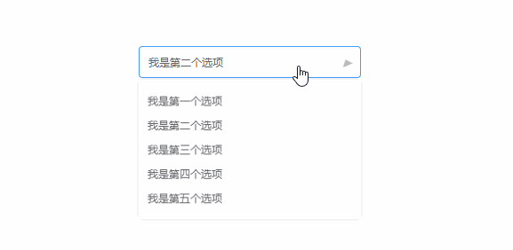

纯css实现高度不固定的下拉文本框的展开/收起的动画效果
最近看到团队的小伙伴，实现高度不固定的下拉文本框的展开/收起的动画效果时， 会涉及到javascript计算下拉框的高度，然后通过css设置高度的过渡效果实现动画， 并且在触发展开/收起时，也是通过javascript去监听document的click事件去处理， 我自己比较喜欢通过css去实现，如下效果：

- 利用css的transform: rotate(-90deg)旋转元素实现展开和收起
- 父元素设置tabindex属性，通过:focus选择器控制展开和收起
html:
<div class="select" tabindex="1">
<div class="select-inner">我是个select</div>
<div class="select-panel">
<div class="select-option">我是第一个选项</div>
<div class="select-option">我是第二个选项</div>
</div>
</div>
transform: rotate(-90deg)
因为高度不固定，通过过渡高度实现动画需要涉及javascript计算高度，所以用css的 transform：rotate(-90deg)可以达到相似的效果
.select-panel {
transform: rotateX(90deg)
transform-origin: center 0;
transition: transform .2s;
}
tabindex + :focus
tabindex属性可以让元素具有获取焦点的功能，点击元素后，元素获得焦点，就可以通过 :focus伪类选择器控制子元素的样式
.select:focus {
.select-panel {
transform: rotateX(0deg)
}
}
完整代码，复制可用
// html：
<div class="select" tabindex="1">
<div class="select-inner">我是个select</div>
<div class="select-panel">
<div class="select-option">我是第一个选项</div>
<div class="select-option">我是第二个选项</div>
<div class="select-option">我是第三个选项</div>
<div class="select-option">我是第四个选项</div>
<div class="select-option">我是第五个选项</div>
</div>
</div>
// css:
.select {
position: relative;
width: 250px;
font-size: 12px;
color: #606266;
outline: none;
&:focus {
.select-inner {
border-color: #409eff;
&::after {
transform: rotateZ(180deg)
}
}
.select-panel {
transform: rotateX(0deg)
}
}
.select-inner {
width: 100%;
height: 36px;
line-height: 34px;
padding: 0 30px 0 10px;
border-radius: 4px;
border: 1px solid #dcdfe6;
outline: none;
white-space: nowrap;
overflow: hidden;
text-overflow: ellipsis;
cursor: pointer;
&::after {
content: '';
position: absolute;
top: 15px;
right: 10px;
border: 6px solid #bbb;
border-top-width: 7px;
border-bottom: none;
border-left-color: transparent;
border-right-color: transparent;
transform: rotateZ(0deg)
transform-origin: center center;
transition: transform .2s;
}
}
.select-panel {
position: absolute;
top: 100%;
left: 0;
margin-top: 2px;
padding: 10px 0;
width: 100%;
border-radius: 4px;
box-shadow: 0 0 8px 0 rgba(0, 0, 0, .1);
transform: rotateX(90deg)
transform-origin: center 0;
transition: transform .2s;
.select-option {
padding: 6px 10px;
cursor: pointer;
&:hover {
color: #fff;
background-color: #409eff;
}
}
}
}